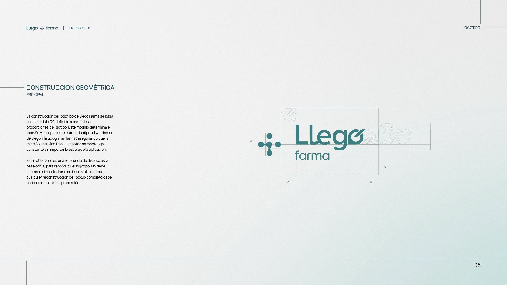
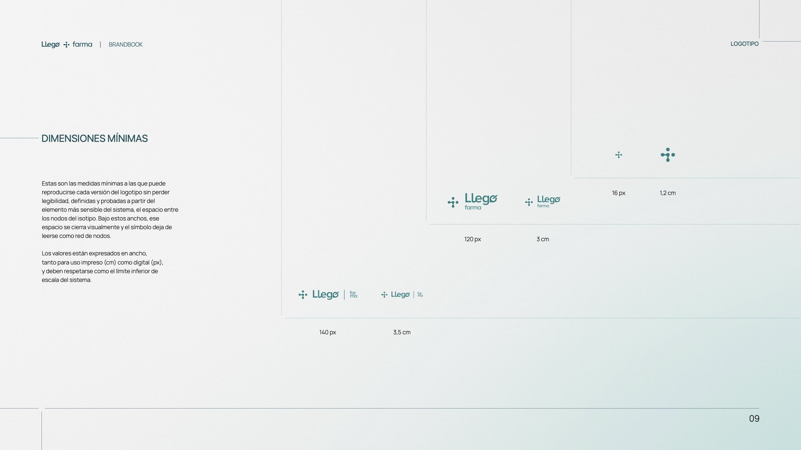

La más orgánica: hereda la trama de Llegó

- Lectura de salud
- Detallada
- Tratamiento propio
- Orgánica
- Coherencia con la madre
- Heredada
- Legibilidad pequeña
- Fina
Un isotipo que se lee como salud sin explicarlo, y 36 páginas de reglas para que otros lo usen.
La más orgánica: hereda la trama de Llegó
La más directa: una cruz hecha de calles

El sistema más consistente: la gramática del nodo






Lámina: la pieza a sangre desde la columna 4, la decisión en el riel y el scroll que cuenta los pasos. Si funciona, reemplaza a la plantilla actual en todas las decisiones.